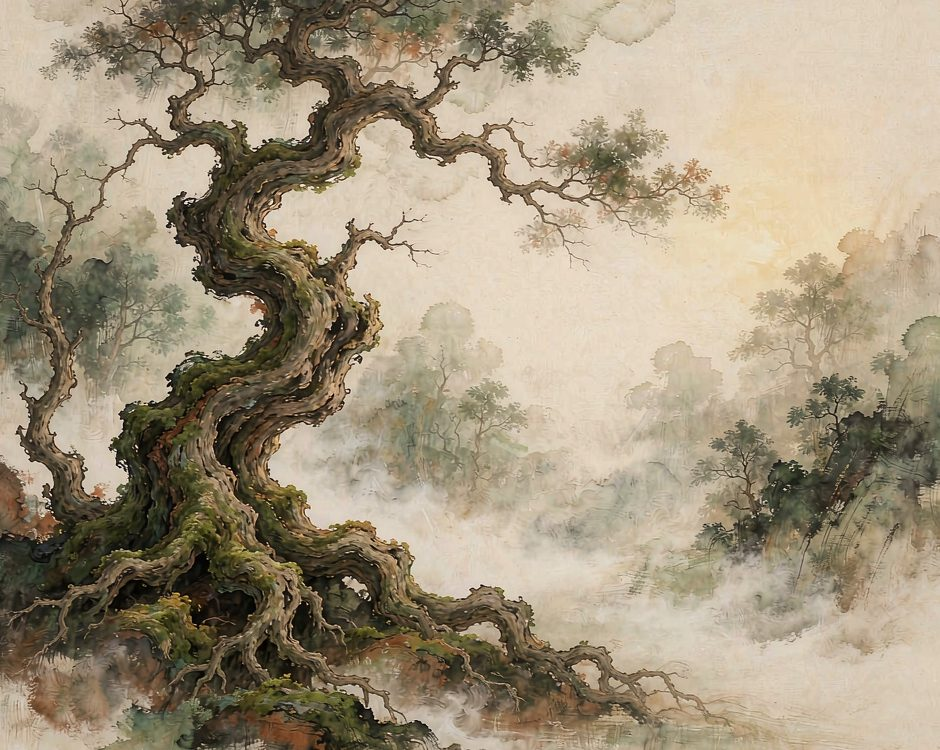
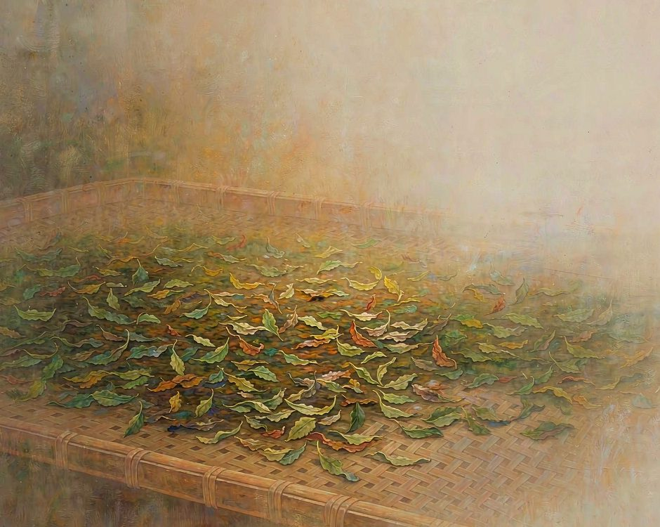
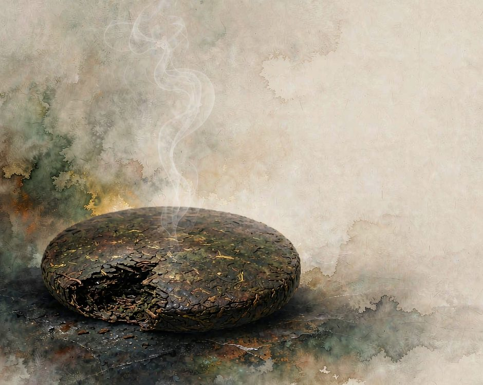

雲南普洱的山上有很多茶樹，是爺爺那一輩種下的，輪到孫子來採。

採茶的時候一天裡最要緊的是時間。
清晨露水乾了以後到中午之前，太陽沒烈的時候。這段時間採下來的芽葉最嫩，攤在竹匾上讓它散水分，半天裡要翻動幾次。
過了中午就停手。太陽烈了，葉子會紅，紅了就熟過頭。
採茶的手也有講究。
拇指和食指捏住芽葉，往上一提就斷，不能往下扯。扯斷的傷口會留很久，芽眼要養幾天才能再採。提斷的傷口平整，下一次採更快。採一天下來，手指頭是黑的，洗不掉。
一株茶樹一次能採的芽葉很有限，採完就等著。所以古樹的產量從來不高，一棵樹一年能被採的次數，用一隻手就數得過來。
樹是土地給的，茶是時間給的
普洱古茶山最特別的地方，樹是人種下的，卻長在霧裡，長成了森林的一部分。
景邁山的古茶林，是布朗族與傣族的先民，從約十世紀起一代一代種出來的。茶樹種在森林底下，沒有把森林砍掉換成茶園，也不施化肥與農藥。千年過去，2023 年，這片茶林成為世界文化遺產。
霧從山谷往上走，走到哪裡，哪裡就濕。
濕度高，土壤酸，茶樹長得慢。慢下來，根就紮得深，紮得深，葉子裡積累的東西就厚。
這不是人做出來的，是霧做出來的。
密集種在臺地上的茶樹，葉子肥，產量高，泡出來味道淡。林下的古樹產量少，泡出來味道厚。這是不能換的取捨。
霧還有另一個作用。它把溫差拉小了。
白天有太陽，霧擋一部分；夜裡散熱慢，霧又蓋一層。溫度穩，茶葉就不急著長，慢慢積累。人不舒服的天氣，茶樹喜歡。
普洱茶有底子。
這個底子，是人把樹種下去之後，那棵樹自己站住了，站了幾十年、上百年，站出來的。
採下來之後才是另一段，一片葉子離開枝頭，就不再有樹幫它長。接下來要靠時間。曬青、殺青、揉捏、曬乾，四道工序，緊接著做，不能拖。做完了還要存，一存又是幾年。所以普洱茶的兩個時間，是接在一起的。樹上的好幾代人，採下來之後的幾年。
前一段是土給的，後一段是時間給的。
殺青那一下，決定了一半
殺青是茶葉最要緊的一步。
鍋燒到很熱，鮮葉倒進去，鍋裡響起一陣脆生生的聲音。炒手要在鍋裡翻，動作快，翻到葉子軟了、梗軟了、出香氣了，才起鍋。
這一步快不得，也慢不得。快了，葉子外頭焦了裡頭還是生的。慢了，葉子悶在鍋裡會發紅，紅了味道就死了。起鍋之後馬上攤開晾。攤在竹匾上，攤薄，晾到葉子上不再冒熱氣。晾的過程裡水分在跑，跑得剛剛好，茶葉才存得住。

這一步看著簡單，做不好會前功盡棄。
攤得太厚，中間捂壞了就發紅。攤得太薄，曬得太狠，葉子會焦邊。攤開之後還要一直守著，隔一陣翻一次，翻到葉子軟下來才算成。
揉捏是為了讓茶汁附著在葉片上。揉重了會碎，揉輕了出不來味。這一下也是手心裡的判斷。四道工序做完，茶還是生茶。要變成可以喝的茶，要再等。等多久，看人喝什麼。喝新茶的人等幾天，喝老茶的人等幾年。
有人喝茶只喝當年做的，覺得老茶是舊的、不好。這種喝法沒錯，只是沒喝到另一種東西。老茶喝的是當年那批葉子裡存下來的東西，喝的是存的過程。
存茶是把時間裝起來
普洱茶最特別的地方，是它不會隨時間變差，反而變好。
這不是所有茶都這樣。綠茶要喝新鮮的，越快越好。普洱不一樣，它在存的過程裡，氧化的過程一直在走，苦澀會慢慢化掉，回甘會慢慢出來。存放的地方有講究。避光、避味、避潮，但不能密封死。普洱要呼吸，密封太嚴會把味道憋住。
所以茶倉不是庫房，是一間有窗的房間。窗開在對的方向，光進來，味道也進來。
普洱不是靠密封保存的，是靠慢慢轉化。
轉化這件事沒有終點。一餅茶放十年能喝，放二十年也能喝，三十年還在變。每一段時間喝到的都是不同的東西。
同一餅茶，兩個喝法。
一個人在三十年後喝到的是三十年攢下來的東西，另一個人在三十年前喝到的，還只是開頭。
茶沒有變，喝的人站在自己的位置上。這也是普洱最特別的地方。
它把時間變成了可以喝的東西。
時間不能倒著走，但茶可以。
誠實的部分
有一件事得說清楚。古樹茶產量很少，一年就那麼多一點。
產量少，價格就高。高了就有人動心思。現在市面上做舊的茶不少，拿新茶當成老茶賣，泡出來喝著像那麼回事，喝下去身體知道。
真正能存到老茶的，前幾年一定會虧。買的時候貴，放幾年沒人喝，幾年後拿出來才見真章。可更多人等不了這幾年。
茶倉裡最多的不是好茶，是等不到好年份的茶。
同一批茶，存放的條件差一點，出來的味道就差一截。防潮做不到，避光做不到，轉化就停在那兒。
村裡種茶的年輕人也在變少。
種茶要等，一棵樹種下去，要等好些年才輪到採，中間都是等。願意種的人不多了。種的和不種的收入差得遠，這是現實。種茶的人家守著幾片坡地，一年到頭最忙的那幾天就是採茶，其餘時間都在等。
這些照實說，是因為不想把一門手藝寫得太順。茶是好茶，山是好山，可是人這個問題，不是一餅茶能解決的。
想種回去
不必先買一座山，可以先學等。
買一餅普洱，放在看得見的地方。不密封，不急著喝。
每三個月打開看一次，看顏色有沒有變，看香氣有沒有沉下去。一年下來就會知道，時間在茶葉上留下了什麼。

開餅的動作也有講究。
茶餅捏緊了一定撬不開，要從邊上順著餅的弧度慢慢挑。挑開了先聞香氣，聞完再看葉底。同一餅茶，三個人聞出三種味道都說得通。
或者自己動手做一次曬青。買一點鮮葉，攤在竹匾上，晾半天，翻幾次。這個動作很簡單，做完就知道什麼叫失去水分。
學喝茶也是學等。第一次泡可能苦，泡到第十次就懂了。茶沒有標準答案，只有喝的次數。
然後把這件事說給一個人聽。說出去的時候不帶著炫耀，是一條線索。聽到的人或許也去買一餅，慢慢放著，一個人喝，兩個人喝，這件事就開始了。
（小練習。今天買一樣需要等才能喝的東西，普洱、白酒或者一款需要醒的酒。放著不動，每個月看它一次。）
你手上有沒有一樣正在等的東西。